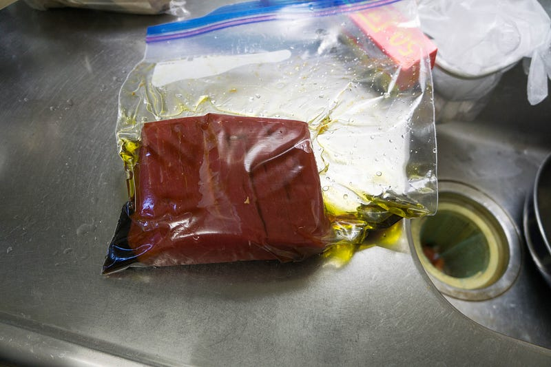
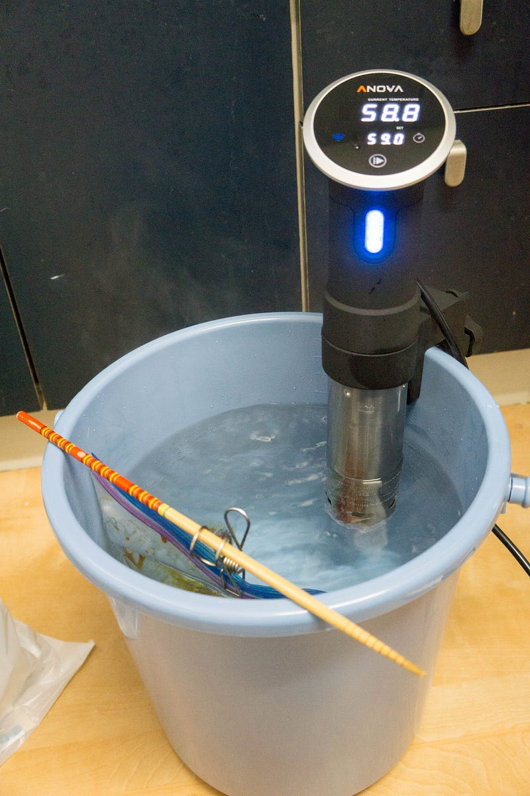
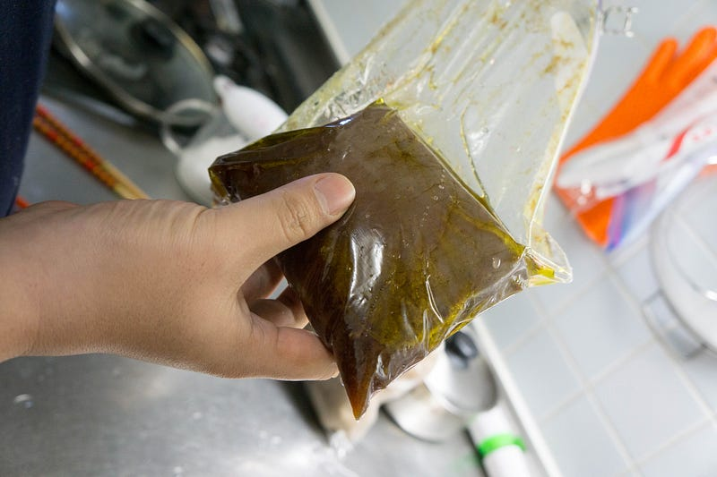
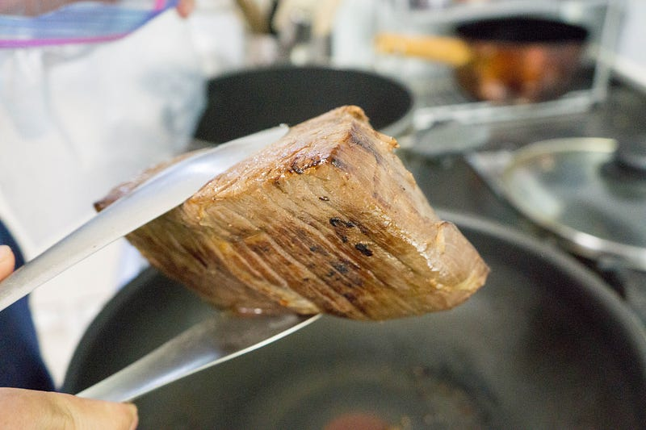
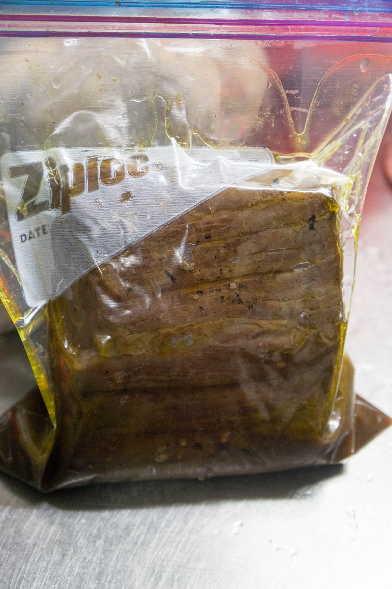
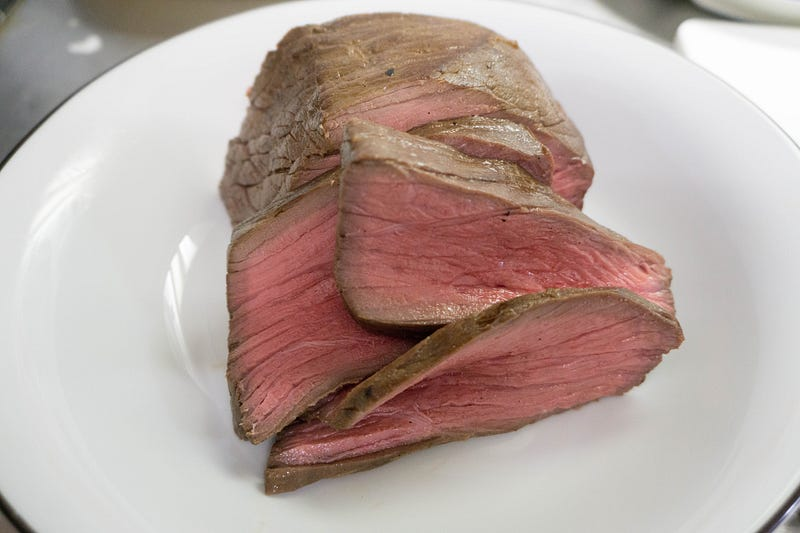
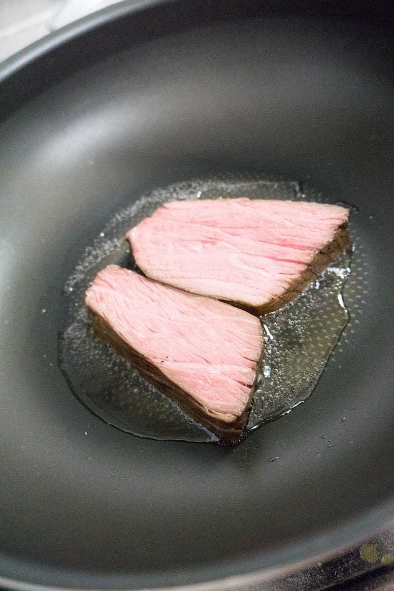

パンドラの箱を開けたのでまずローストビーフを作った
パンドラの箱を開けたのでまずローストビーフを作った
前回の続き。念のため最初に言っておくと、一応、こう、エントリを書こうかとは思った物の、正直この低温調理というの、Anovaがスゴすぎてあまり書く事がない。
今回はAnovaでローストビーフを作る某レシピを参考にした。後述するように大分レシピを魔改造しているので、元レシピの名誉のためにリンクはしない。
肉はハナマサで普通に売ってた牛モモ赤身のブロック（オージービーフなはず）。特に下ごしらえも何もない。せいぜい「肉をジップロックにいれたらジップロックからなるたけ空気を抜いておこう」くらいか
知っておくだけで何かと便利。それがライフハックである。今回ご紹介するのは、肉の保存などで使用するジッパー付きの袋「ジップロック」。これを真空で保存する方法だ。しかも超簡単ときた！ すでに知っている人もいるかもしれないが、知らなかった人は…rocketnews24.com
上記レシピでは55℃で2時間という指定であった。前回書いたようにうちはまだビギナーなのもあってギリギリ温度で攻めるのは怖い。ということで様子見ということで59℃という微妙な温度で一旦試してみることにした。
そして夕飯の時間の問題があるので一気に味付けも行う事にする。元のレシピでは加熱処理をしてから、一晩ほどタレにつけていた。だが子供がいると「今日のご飯ちょっと遅くてもいい？」が簡単にはできないし、今夜の飯はこれ以外ない。ならば基本的に加熱時間＝味をつける時間でなければいけない。というわけで今回は最初の調理のタイミングですでにタレを入れておく。タレは即興でオリーブオイル、醤油、ウスターソース、砂糖を混ぜてつくって入れた。

「雑だな」そう思ってくれて良い。我が家は雑なのだ。
お湯を用意して、温度設定をして、時間設定をして、温度が希望温度になったところで肉を入れる。水流の影響を受けないようにとかを考えて、位置を固定するために今回は即席で菜箸にクリップでジップロックを釣る形を導入した。

で、2時間待つ。

できた。このままでも行けそうだけど、ちょっと衛生的に念のため、と、見た目のために焼き目をつけたいということで軽く焼く。

味つけも調節したいから煮汁を煮詰めて、味を調節して、夕飯直前までもうすこしつけこんでおいておく

で、夕飯直前に、親はいわゆるローストビーフスタイル（冷菜として）食べることにするが、子供らは最後のもうひと焼きを入れてから食べさせることにした（とにかく素人なので最初の数回くらいは安全なはずでももうひと火入れをしたい）。子供の様子と自分の慣れ加減・理解をみながらこの辺りは今後調節していきたい。
で、子供らに食べさせる分はローストビーフにしてはちょっと厚めに切ったので、並べると良い感じに写真映えがする（気がする）ので、記念写真。

この厚めの肉は前述の通り軽く炙られてから小さく切られて無事子供達の胃袋に収まりました。

おとなの感想としては「あれだけ雑な肉で雑に作ったのに、ちゃんと柔らかい！」「うまい！」という感じ。なお、某漫画家さんのようにこれにバター丸々一本入れたマッシュドポテトをつけるのは狂気の沙汰だな、と思いました。
Amazonで小林銅蟲の{ProductTitle}。アマゾンならポイント還元本が多数。一度購入いただいた電子書籍は、KindleおよびFire端末、スマートフォンやタブレットなど、様々な端末でもお楽しみいただけます。amzn.to
文明の利器ってすごいなー。と思った夕飯であった。
次回は「鶏胸肉のコンフィ」の予定。